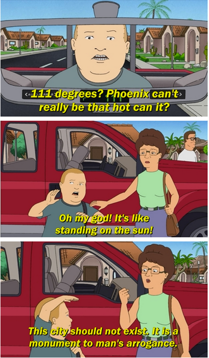

Abstract: I flew down to Arizona for a big computer science conference. The weekend before and after I climbed in Northern Arizona with some friends-of-friends and random people I met. I climbed at Winslow Wall (a cool flooded slot canyon with varnished black sandstone reminiscent of Red Rocks), Priest Draw (a limestone bouldering area world famous for its pockets and burley climbing on horizontal roofs), and Paradise Forks (a very traditional and scenic basalt crack climbing area full of technical stemming and jamming, also popular for highlining).
Introduction
While academia can be demanding, it can also present unique opportunities for travel. I once met a Slovenian mechanical engineering professor traveling to The States for a conference. He was strong and psyched, and we had a blast climbing in the Red River Gorge. After meeting him, I knew I wanted to link work and climbing trips whenever possible. 
The biggest conference in my field is called Economics and Computation, EC. The EC community studies computation problems where incentives come into play, covering diverse topics from voting theory to auction design and interesting applications from K-12 school choice to resident-hospital matching. It's held every summer and this year the venue was Phoenix, Arizona. I could describe what Phoenix is like in June, but I think I'll let the Hill Family help me out here. Link.
"Surface of the sun" notwithstanding, by driving two hours north of Phoenix you gain 5000 feet of elevation and enter into an entirely different ecosystem. The afternoon of Friday, June 21st, I did exactly that. It was incredibly satisfying watching the temperature display on my rental car slowly dip from 110 to 75 as the land around me shifted from cactus-spotted desert to grassy plain to dense ponderosa pine forest. I’d entered the coconino national forest, a varied landscape surrounding the city of Flagstaff, my “climbing base” for the trip.
My camping spot for the night was Priest Draw, an incredible limestone bouldering area you’ll hear about later. I got in with just enough light left to explore one boulder. I found out later that this boulder is called the “the brain”, which is an apt name for it’s huge wiggley ridges. Within those ridges are the most hilariously large jugs I’d ever seen, which made for perfect and chill circuits to solo around for a few minutes before it started to get dark.
Day 1: Winslow Wall
Saturday morning I headed to Flagstaff to meet up with a friend-of-a-friend named Jackson. Jackson was stoked to show me Winslow wall, which he thought was one of the real gems of the Flagstaff area. Winslow, Arizona (such a fine sight to see) is a very small town an hour east of Flagstaff. That short drive brings you out of the mountains and forest and back into arid grassy plains. However, Jackson assured me as we bumped along backroads surrounded by a completely flat landscape, we really were headed to an awesome crag with 100 foot tall routes.
Winslow wall is a narrow sandstone canyon carved out by East Clear Creek.
Routes Breakdown:
- 5.11b Mulva and 5.11c Aqua-Vulva. These routes both tackled incredible
“scoop” features carved out of the wall.
- 5.12b Slap My Fro. Climbing magazine liked this arete enough to call it
one of the
100 best sport climbs in America. Now I’m not sure if it quite stacks up
against, you know, a randomly chosen semi-popular route in the Red River
Gorge, but it was definitely the highlight of my day! I tried to onsight,
flailed, did the cruxes a couple times each while hangdogging, then I sent!
Stoke was high.
Some thin moves in the start bring you to the corner rest in the bottom of the picture. Next some mellow but very cool arete laybacking brings you to the back-to-back cruxes at about two thirds hight, where the angle kicks back. The first crux requires flipping a hold to an undercling off bad feet, and keeping enough tension to readjust and make a big reach. Jackson gave me very helpful beta here. I did the second crux in a very unique way: a dyno-to-mantle! Your right hand is on a big slopey ledge for this move, and you left hand has some high opposition, so I simply jumped my weight on top of my right hand.
Second photo below (not mine — shot by some guy Damon Vaughan) shows the first crux really well. Check out the mountain project for more awesome shots!
- 5.11c The Winsloner. More thin crimping! This felt like a bit of a
journey, as you weave back and forth following the bolts and the holds.
There was a very cool "upward press" move under the mini-roof which felt
like a competition problem. I had to press upward on nothing to maintain
balance and walk my feet up.
- 5.10 Stick It
Variables
Any plain, lowercase word is a variable in ruby. Variables may consist of letters, digits and underscores.
x, y, banana2 or phone_a_quail are examples.
Variables are like nicknames. Remember when everyone used to call you Stinky Pete? People would say, “Get over here, Stinky Pete!” And everyone miraculously knew that Stinky Pete was you.
With variables, you give a nickname to something you use frequently. For instance, let’s say you run an orphanage. It’s a mean orphanage. And whenever Daddy Warbucks comes to buy more kids, we insist that he pay us one-hundred twenty-one dollars and eight cents for the kid’s teddy bear, which the kid has become attached to over in the darker moments of living in such nightmarish custody.
teddy_bear_fee = 121.08Later, when you ring him up at the cash register (a really souped-up cash register which runs Ruby!), you’ll need to add together all his charges into a total.
total = orphan_fee + teddy_bear_fee + gratuityThose variable nicknames sure help. And in the seedy underground of child sales, any help is appreciated I’m sure.

Numbers
The most basic type of number is an integer, a series of digits which can start with a plus or minus sign.
1, 23, and -10000 are examples.
Commas are not allowed in numbers, but underscores are. So if you feel the need to mark your thousands so the numbers are more readable, use an underscore.
population = 12_000_000_000Decimal numbers are called floats in Ruby. Floats consist of numbers with a decimal place or scientific notation.
3.14, -808.08 and 12.043e-04 are examples.
Strings
Strings are any sort of characters (letters, digits, punctuation) surrounded by quotes. Both single and double quotes are used to create strings.
"sealab", '2021', or "These cartoons are hilarious!" are examples.
When you enclose characters in quotes, they are stored together as a single string.
Think of a reporter who is jotting down the mouth noises of a rambling celebrity. “I’m a lot wiser,” says Avril Lavigne. “Now I know what the business is like—what you have to do and how to work it.”
avril_quote = "I'm a lot wiser. Now I know
what the business is like -- what you have
to do and how to work it."So, just as we stored a number in the teddy_bear_fee variable, now we’re storing a collection of characters (a string) in the avril_quote variable. The reporter sends this quote to the printers, who just happen to use Ruby to operate their printing press.
print oprah_quote
print avril_quote
print ashlee_simpson_debacle
Symbols
Symbols are words that look just like variables. Again, they may contain letters, digits, or underscores. But they start with a colon.
:a, :b, or :ponce_de_leon are examples.
Symbols are lightweight strings. Usually, symbols are used in situations where you need a string but you won’t be printing it to the screen.
You could say a symbol is a bit easier on the computer. It’s like an antacid. The colon indicates the bubbles trickling up from your computer’s stomach as it digests the symbol. Ah. Sweet, sweet relief.

Constants
Constants are words like variables, but constants are capitalized. If variables are the nouns of Ruby, then think of constants as the proper nouns.
Time, Array or Bunny_Lake_is_Missing are examples.
In English, proper nouns are capitalized. The Empire State Building. You can’t just move The Empire State Building. You can’t just decide that the Empire State Building is something else. Proper nouns are like that. They refer to something very specific and usually don’t change over time.
In the same way, constants can’t be changed after they are set.
EmpireStateBuilding = "350 5th Avenue, NYC, NY"If we try to change the constant, Ruby will complain to us. Such things are frowned upon.

Methods
If variables and constants are the nouns, then methods are the verbs. Methods are usually attached to the end of variables and constants by a dot. You’ve already seen methods at work.
front_door.openIn the above, open is the method. It is the action, the verb. In some cases, you’ll see actions chained together.
front_door.open.closeWe’ve instructed the computer to open the front door and then immediately close it.
front_door.is_open?The above is an action as well. We’re instructing the computer to test the door
to see if it’s open. The method could be called Door.test_to_see_if_its_open,
but the is_open? name is succinct and just as correct. Both exclamation marks
and question marks may be used in method names.
Method arguments
A method may require more information in order to perform its action. If we want the computer to paint the door, we should provide a color as well.
Method arguments are attached to the end of a method. The arguments are usually surrounded by parentheses and separated by commas.
front_door.paint( 3, :red )The above paints the front door 3 coats of red.
Think of it as an inner tube the method is pulling along, containing its extra instructions. The parentheses form the wet, round edges of the inner tube. The commas are the feet of each argument, sticking over the edge. The last argument has its feet tucked under so they don’t show.
Like a boat pulling many inner tubes, methods with arguments can be chained.
front_door.paint( 3, :red ).dry( 30 ).close()The above paints the front door 3 coats of red, dries for 30 minutes, and closes the door. Even though the last method has no arguments, you can still put parentheses if you like. There is no use dragging an empty inner tube, so the parentheses are normally dropped.
Some methods (such as print) are kernel methods. These methods are used
throughout Ruby. Since they are so common, you won’t use the dot.
print "See, no dot."Class methods
Like the methods described above (also called instance methods), class methods are usually attached after variables and constants. Rather than a dot, a double colon is used.
Door::new( :oak )As seen above, the new class method is most often used to create things. In
the above example, we’re asking Ruby to make a new oak door for us. Of course,
Ruby has to have an understanding of how to make a door—as well as a wealth of
timber, lumberjacks, and those long, wiggly, two-man saws.

Global variables
Variables which begin with a dollar sign are global.
$x, $1, $chunky and $CHunKY_bACOn are examples.
Most variables are rather temporary in nature. Some parts of your program are
like little houses. You walk in and they have their own variables. In one house,
you may have a dad that represents Archie, a traveling salesman and skeleton
collector. In another house, dad could represent Peter, a lion tamer with a
great love for flannel. Each house has its own meaning for dad.
With global variables, you can be guaranteed that the variable is the same in every little house. The dollar sign is very appropriate. Every American home respects the value of the dollar. We’re crazy for the stuff. Try knocking on any door in America and hand them cash. I can guarantee you won’t get the same reaction if you knock on a door and offer Peter, a lion tamer with a great love for flannel.
Global variables can be used anywhere in your program. They never go out of sight.
Instance variables
Variables which begin with an at symbol are instance variables.
@x, @y, and @only_the_chunkiest_cut_of_bacon_I_have_ever_seen are
examples.
These variables are often used to define the attributes of something. For
example, you might provide Ruby with the width of the front_door by setting
the @width variable inside that front_door. Instance variables are used to
define characteristics of a single object in Ruby.
Think of the at symbol as meaning attribute.
Class variables
Variables which begin with double at symbols are class variables.
@@x, @@y, and @@i_will_take_your_chunky_bacon_and_raise_you_two are
examples.
Class variables, too, are used to define attributes. But rather than defining an
attribute for a single object in Ruby, class variables give an attribute to many
related objects in Ruby. If instance variables set attributes for a single
front_door, then class variables set attributes for everything that is a
Door.
Think of the double at prefix as meaning attribute all. Additionally, you can think of a swarm of AT-ATs from Star Wars, which are all commanded by Ruby. You change a class variable and not just one changes, they all change.

Blocks
Any code surrounded by curly braces is a block.
2.times {
print "Yes, I've used chunky bacon in my examples, but never again!"
}With blocks, you can group a set of instructions together so that they can be passed around your program. The curly braces give the appearance of crab pincers that have snatched the code and are holding it together. When you see these two pincers, remember that the code inside has been pressed into a single unit.
It’s like one of those little Hello Kitty boxes they sell at the mall that’s stuffed with tiny pencils and microscopic paper, all crammed into a glittery transparent case that can be concealed in your palm for covert stationery operations. Except that blocks don’t require so much squinting.
The curly braces can also be traded for the words do and end, which is nice if your block is longer than one line.
loop do
print "Much better."
print "Ah. More space!"
print "My back was killin' me in those crab pincers."
endBlock arguments
Block arguments are a set of variables surrounded by pipe characters and separated by commas.
|x|, |x,y|, and |up, down, all_around| are examples.
Block arguments are used at the beginning of a block.
{ |x,y| x + y }In the above example, |x,y| are the arguments. After the arguments, we have a
bit of code. The expression x + y adds the two arguments together.
I like to think of the pipe characters as representing a tunnel. They give the
appearance of a chute that the variables are sliding down. (An x goes down
spread eagle, while the y neatly crosses her legs.) This chute acts as a
passageway between blocks and the world around them.
Variables are passed through this chute (or tunnel) into the block.

Ranges
A range is two values surrounded by parentheses and separated by an ellipsis (in the form of two or three dots).
(1..3)is a range, representing the numbers 1 through 3.('a'..'z')is a range, representing a lowercase alphabet.
Think of it as an accordion which has been squeezed down for carrying. (Sure, you can build a great sense of self-worth by carrying around an unfolded accordion, but sometimes a person needs to wallow in self-doubt, carefully concealing the squeeze-box.) The parentheses are the handles on the sides of a smaller, handheld accordion. The dots are the chain, keeping the folds tightly closed.
Normally, only two dots are used. If a third dot is used, the last value in the range is excluded.
(0...5)represents the numbers 0 through 4.
When you see that third dot, imagine opening the accordion slightly. Just enough to let one note from its chamber. The note is that end value. We’ll let the sky eat it.
Arrays
An array is a list surrounded by square brackets and separated by commas.
[1, 2, 3]is an array of numbers.['coat', 'mittens', 'snowboard']is an array of strings.
Think of it as a caterpillar which has been stapled into your code. The two square brackets are staples which keep the caterpillar from moving, so you can keep track of which end is the head and which is the tail. The commas are the caterpillar’s legs, wiggling between each section of its body.
Once there was a caterpillar who had commas for legs. Which meant he had to allow a literary pause after each step. The other caterpillars really respected him for it and he came to have quite a commanding presence. Oh, and talk about a philanthropist! He was notorious for giving fresh leaves to those less-fortunate.
Yes, an array is a collection of things, but it also keeps those things in a specific order.
Hashes
A hash is a dictionary surrounded by curly braces. Dictionaries match words with their definitions. Ruby does so with arrows made from an equals sign, followed by a greater-than sign.
{'a' => 'aardvark', 'b' => 'badger'} is an example.
This time, the curly braces represent little book symbols. See how they look like little, open books with creases down the middle? They represent opening and closing our dictionary.
Imagine our dictionary has a definition on each of its pages. The commas represent the corner of each page, which we turn to see the next definition. And on each page: a word followed by an arrow pointing to the definition.
{ 'name' => 'Peter', 'profession' => 'lion tamer', 'great love' => 'flannel' }I’m not comparing hashes to dictionaries because you can only store definitions in a hash. In the example above, I stored personal information for Peter, the lion tamer with a great love for flannel. Hashes are like dictionaries because they can be very easy to search through.

Regular Expressions
A regular expression (or regexp) is a set of characters surrounded by slashes.
/ruby/, /[0-9]+/ and /^\d{3}-\d{3}-\d{4}/ are examples.
Regular expressions are used to find words or patterns in text. The slashes on each side of the expression are pins.
Imagine if you had a little word with pins on both side and you held it over a book. You pass the word over the book and when it gets near a matching word, it starts blinking. You pin the regular expression onto the book, right over the match and it glows with the letters of the matching word.
Oh, and when you poke the pins into the book, the paper sneezes, reg-exp!
Regular expressions are much faster than passing your hand over pages of a book. Ruby can use a regular expression to search volumes of books very quickly.
Operators
You’ll use the following list of operators to do math in Ruby or to compare
things. Scan over the list, recognize a few. You know, addition + and
subtraction - and so on.
** ! ~ * / % + - &
<< >> | ^ > >= < <= <=>
|| != =~ !~ && += -= == ===
.. ... not and or
Keywords
Ruby has a number of built-in words, imbued with meaning. These words cannot be used as variables or changed to suit your purposes. Some of these we’ve already discussed. They are in the safe house, my friend. You touch these and you’ll be served an official syntax error.
alias and BEGIN begin break case class def defined
do else elsif END end ensure false for if
in module next nil not or redo rescue retry
return self super then true undef unless until when
while yield
Good enough. These are the illustrious members of the Ruby language. We’ll be having quite the junket for the next three chapters, gluing these parts together into sly bits of (poignant) code.
I’d recommend skimming all of the parts of speech once again. Give yourself a broad view of them. I’ll be testing your metal in the next section.

3. If I Haven’t Treated You Like a Child Enough Already
I’m proud of you. Anyone will tell you how much I brag about you. How I go on and on about this great anonymous person out there who scrolls and reads and scrolls and reads. “These kids,” I tell them. “Man, these kids got heart. I never…” And I can’t even finish a sentence because I’m absolutely blubbering.
And my heart glows bright red under my filmy, translucent skin and they have to administer 10cc of JavaScript to get me to come back. (I respond well to toxins in the blood.) Man, that stuff will kick the peaches right out your gills!
So, yes. You’ve kept up nicely. But now I must begin to be a brutal schoolmaster. I need to start seeing good marks from you. So far, you’ve done nothing but move your eyes around a lot. Okay, sure, you did some exceptional reading aloud earlier. Now we need some comprehension skills here, Smotchkkiss.
Say aloud each of the parts of speech used below.
5.times { print "Odelay!" }You might want to even cover this paragraph up while you read, because your eyes
might want to sneak to the answer. We have a number 5, followed by a
method .times. Then, the first crab pincers of a block. The kernel
method print has no dot and is followed by a string "Odelay!". The final
crab pincers close our block.
Say aloud each of the parts of speech used below.
exit unless "restaurant".include? "aura"Like the print method, exit is a kernel method. If you were paying
attention during the big list of keywords, you’ll know that unless is just
such a keyword. The string "restaurant" is clung to by the method
include?. And finally, the string "aura".
Say aloud each of the parts of speech used below.
['toast', 'cheese', 'wine'].each { |food| print( food.capitalize ) }This caterpillar partakes of finer delicacies. An array starts this example.
In the array, three strings 'toast', 'cheese', and 'wine'. The whole
array is trailed by a method each.
Inside of a block, the block argument food, traveling down its little
waterslide into the block. The method capitalize then capitalizes the first
letter of the block argument, which has become variable food. This
capitalized string is passed to kernel method print.
Look over these examples once again. Be sure you recognize the parts of speech used. They each have a distinct look, don’t they? Take a deep breath, press firmly on your temples. Now, let’s dissect a cow’s eye worth of code.
4. An Example to Help You Grow Up

Say aloud each of the parts of speech used below.
require 'net/http'
Net::HTTP.start( 'www.ruby-lang.org', 80 ) do |http|
print( http.get( '/en/about/license.txt' ).body )
endThe first line is a method call. The method called require is used. A
string is passed to the method containing 'net/http'. Think of this first
line of code as a sentence. We have told Ruby to load some helper code, the
Net::HTTP library.
The next three lines all go together. The constant Net::HTTP refers to the
library we loaded above. We are using the method start from the library.
Into the method, we’re sending a string 'www.ruby-lang.org' and the number
80.
The word do opens a block. The block has one block variable http. Inside
the block, the method print is called. What is being printed?
From the variable http, the method get is called. Into get, we pass a
string containing the path '/en/about/license.txt'. Now, notice that another
method is chained onto get. The method body. Then, the block closes with
end.
Doing okay? Just out of curiosity, can you guess what this example does? Hopefully, you’re seeing some patterns in Ruby. If not, just shake your head vigorously while you’ve got these examples in your mind. The code should break apart into manageable pieces.
For example, this pattern is used a number of times:
_variable_ . _method_ ( _method arguments_ )
You see it inside the block:
http.get( '/en/about/license.txt' )We’re using Ruby to get a web page. You’ve probably used HTTP with your web browser. HTTP is the Hypertext Transfer Protocol. HTTP is used to transfer web pages across the Internet. Conceptualize a bus driver that can drive across the Internet and bring back web pages for us. On his hat are stitched the letters HTTP.
The variable http is that bus driver. The method is a message to the bus
driver. Go get the web page called /en/about/license.txt.
So where you see the chain of methods:
http.get( '/en/about/license.txt' ).bodySince we’ll be getting back a web page from the http bus driver, you can read
this in your brain as:
_web page_ .body
And this bit of code:
print( http.get( '/en/about/license.txt' ).body )This code gets the web page. We send a body message to the web page, which
gives us all the HTML in a string. We then print
that string. See how the basic dot-method pattern happens in a chain. The next
chapter will explore all these sorts of patterns in Ruby. It’ll be good fun.
So, what does this code do? It prints the Ruby license page to the screen using a web-enabled bus driver.
5. And So, The Quick Trip Came To An Eased, Cushioned Halt

So now we have a problem. I get the feeling that you are enjoying this way too much. And you haven’t even hit the chapter where I use jump-roping songs to help you learn how to parse XML!
If you’re already enjoying this, then things are really going bad. Two chapters from now you’ll be writing your own Ruby programs. In fact, it’s right about there that I’ll have you start writing your own role-playing game, your own file-sharing network (a la BitTorrent), as well as a program that will pull genuine random numbers from the Internet.

And you know (you’ve got to know!) that this is going to turn into an obsession. First, you’ll completely forget to take the dog out. It’ll be standing by the screen door, darting its head about, as your eyes devour the code, as your fingers slip messages to the computer.
Thanks to your neglect, things will start to break. Your mounds of printed sheets of code will cover up your air vents. Your furnace will choke. The trash will pile-up: take-out boxes you hurriedly ordered in, junk mail you couldn’t care to dispose of. Your own uncleanliness will pollute the air. Moss will infest the rafters, the water will clog, animals will let themselves in, trees will come up through the foundations.
But your computer will be well-cared for. And you, Smotchkkiss, will have nourished it with your knowledge. In the eons you will have spent with your machine, you will have become part-CPU. And it will have become part-flesh. Your arms will flow directly into its ports. Your eyes will accept the video directly from DVI-24 pin. Your lungs will sit just above the processor, cooling it.
And just as the room is ready to force itself shut upon you, just as all the overgrowth swallows you and your machine, you will finish your script. You and the machine together will run this latest Ruby script, the product of your obsession. And the script will fire up chainsaws to trim the trees, hearths to warm and regulate the house. Builder nanites will rush from your script, reconstructing your quarters, retiling, renovating, chroming, polishing, disinfecting. Mighty androids will force your crumbling house into firm, rigid architecture. Great pillars will rise, statues chiseled. You will have dominion over this palatial estate and over the encompassing mountains and islands of your stronghold.
So I guess you’re going to be okay. Whatdya say? Let’s get moving on this script of yours?